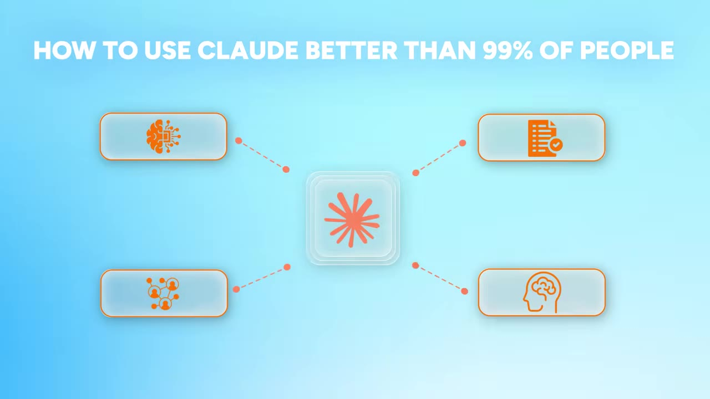
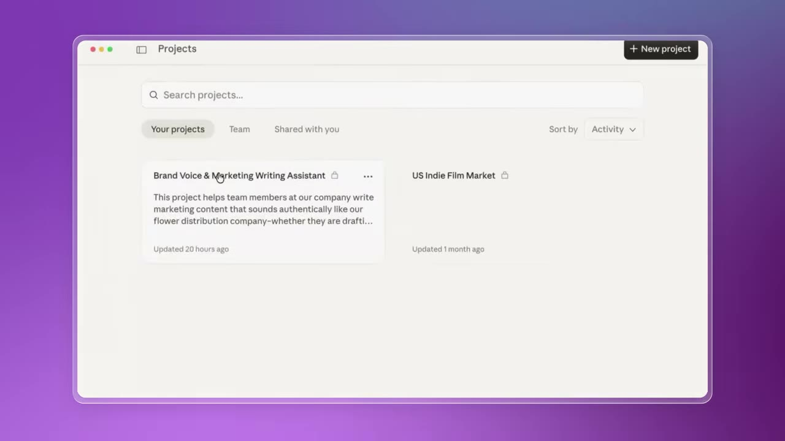
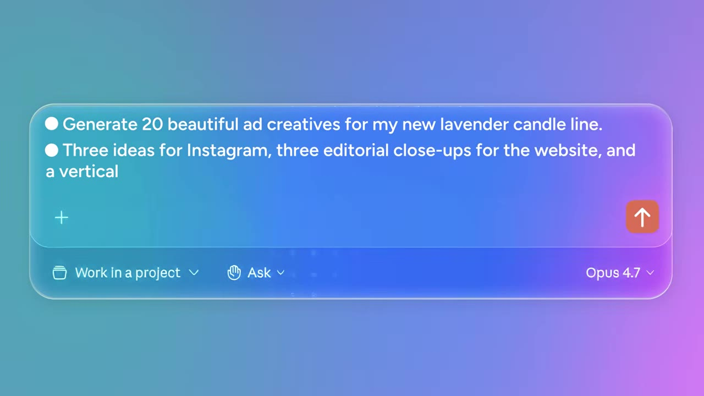
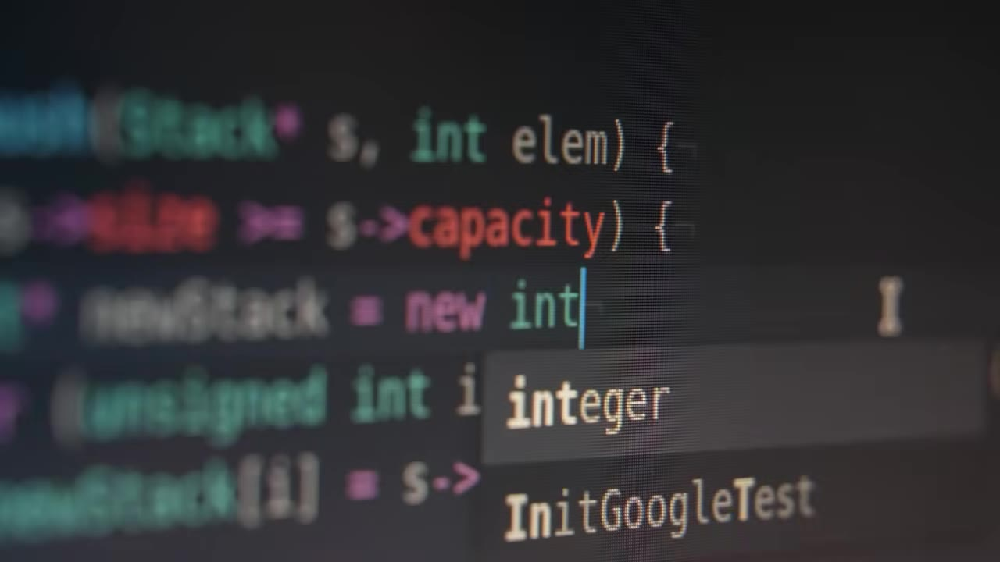
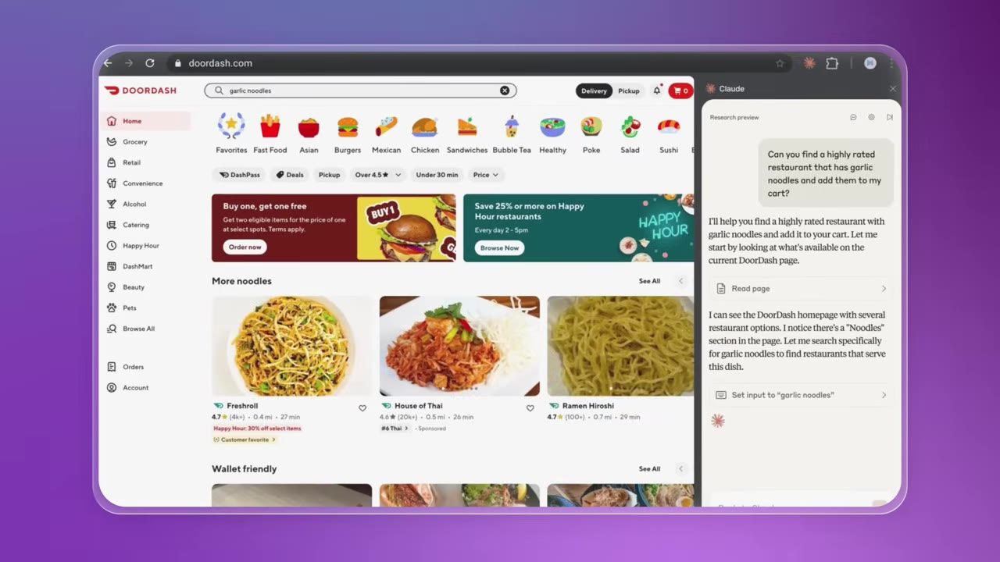
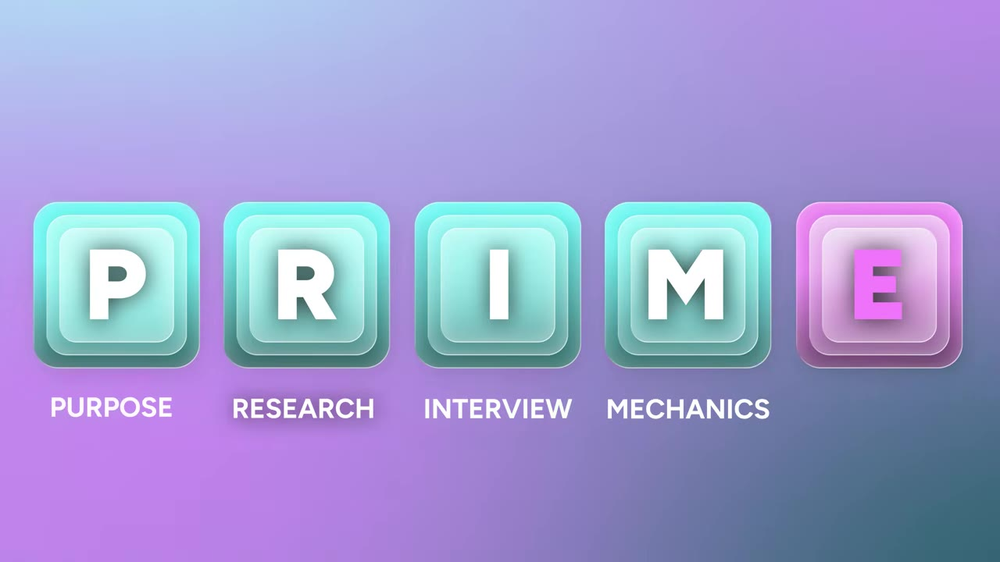

Claude is a stack of five tools — Chat, Projects, Co-Work, Code, Chrome — each designed for a different kind of work.
Stop pasting prompts and copying outputs. Use Claude as a thinking partner that pushes back on your ideas.
Claude Projects turns one-off chats into an ongoing relationship with memory, tone, and instructions.
Claude Code lets non-engineers build real tools in English — no CS degree required.
The PRIME framework (Purpose, Research, Interview, Mechanics, Examples) is the single gap between average and elite AI output.
00 · The Stack
Claude isn't one tool — it's five

Claude as a stack: five tools working as a team.00:00:37
Give Claude to two people. One will use it to build a better email. The other will use it to help build a hundred-million-dollar company. Same tool, different users.
Claude isn't a chatbot. It's a stack of tools built for a fundamentally different kind of work environment:
Chat — Think: bring a messy problem, work through it with a partner
Projects — Remember: give Claude your files, instructions, tone, ongoing work
Co-Work — Execute: give tasks, not questions, and finish on your desktop
Code — Build: write code in English, no computer science background needed
Chrome — Browse: let Claude see what you're looking at and act inside your workflow
Key insightOnce you understand how this team of agents works together, your output can change dramatically.
01 · Think
Make Claude your thinking partner, not your copywriter
The AIM framework: Actor, Input, Mission — structure your prompt so Claude knows who to be, what to work with, and what to deliver.00:02:00
Most people type "write me a LinkedIn post about leadership" and get back a polished paragraph that says nothing. The fix is simpler than you think:
Make Claude your thinking partner. Instead of asking it to do all the work, give it a role and ask it to push back:
You are a business school professor. I am trying to explain why some leaders sound credible and others don't. I'm attaching my notion page with a rough idea. Your job is to push back on what's weak and sharpen what's real. Find me research that helps me create a strong insight and then we can write a LinkedIn post.
Three power moves when Claude gives you garbage on the first try:
Rich contextConnect Claude to your Google Drive, email, calendar, Notion. Attach files. Let it read them.
Ground with researchAsk Claude to go out and verify what it found. Always ask one more time: "Is this verified?"
Learn and do in parallelStuck on a financial concept? Open a new tab, ask Claude, then apply what you learned back in your main project.
You make Claude your thinking partner.— theMITmonk
02 · Remember
Turn one-off chat into an ongoing relationship

Claude Projects: files, instructions, and tone stored per-project so Claude remembers your context.00:04:40
The work doesn't end in one chat session. Claude Projects solves this by giving Claude memory:
A project is where you give Claude your files, your instructions, your tone, your ongoing work. You're not starting from zero every time you open it.
The key is project-level customization, not account-level. Using AI to plan your vacation is very different from using it to plan your retirement.
A project turns Claude from a one-off conversation into an ongoing relationship between you and your AI.— theMITmonk
Write a project brief for someone you know very well — yourself. Set the role ("you're the world's most badass recruiter"), your voice ("I write in a direct, confident tone. I don't like corporate fillers"), and your rules ("when I ask you for feedback, be honest. Tell me what's weak.").
03 · Execute
Give tasks, not questions

Claude Co-Work: a desktop app where you give multi-step tasks and get local files back — not chat responses.00:10:18
Chat is where the work begins. Co-Work is where it gets done. It's a desktop application for Mac or Windows that takes multi-step tasks with local files as input and produces local files as output.
You use Co-Work when you have assets on your hard drive, the task needs multiple steps, and the output needs to be a local file.
Claude can reach other AI tools through MCP (Model Context Protocol) — think of it as giving Claude a set of keys to other tools. It can knock on their door, unlock their capabilities, and act through them.
MCP in actionConnect Claude Co-Work to a creative AI tool like Hixiefield via MCP. Tell it "generate 20 beautiful ad creatives for my new lavender candle line" — the images and video land in your local folder without hiring an agency.
Security noteGive Claude Co-Work permission to access only specific directories. Create a subfolder, move your files there — this is called sandboxing. The rest of your hard drive remains secure.
04 · Build
Code without a CS degree

Claude Code: the code editor where Claude generates and edits code based on your English prompts.00:12:34
This is the part that makes a lot of people nervous. The moment we hear "code," we assume it's only for engineers. That assumption is one of the biggest missed opportunities in AI right now.
If you can type in English, you don't need a computer science background to code and build something cool and useful.— theMITmonk
Say you have a consulting business. Just go to Claude Code and type:
I want a dashboard where I can drop in my sales pipeline and meeting notes and instantly see which deals are at risk, what's stuck, and what my next move should be.
That's all you need. You don't need to think like an engineer. You just need to be clear about the problem you want to solve.
05 · Browse
Let Claude see what you see

Claude Chrome extension: Claude reads pages, pulls insights, and acts inside your browser workflow in real time.00:13:33
Claude has a Chrome extension that lets it see what you're looking at, help you process it, and act inside your workflow in real time.
Most work happens inside the browser — files on Google Drive, emails, scheduling, research, filling out forms, making purchases, planning trips. Claude is right there with you for all of it.
On a job listing site, Claude reads it and helps tailor your outreach.
Reading a 40-page industry report, Claude pulls the three insights that matter.
06 · PRIME
The framework that separates elite from average

The PRIME framework: Purpose, Research, Interview, Mechanics, Examples. Any AI's results depend on you — this is how you direct Claude the way you would direct a smart person you just hired.00:17:23
Even with the full team of agents working for you, one gap can make all the difference between average and elite mode: how you direct Claude.
P — Purpose: Give a precise goal. "Help me turn this messy proposal into a five-part organized document that looks like a sharp client memo."
R — Research: Ask Claude to go fetch external data, then verify it. Supply your own raw material — notes, transcripts, files, examples.
I — Interview: Tell Claude to interview you before responding. It will ask questions that sharpen its scope.
M — Mechanics: Specify the output format. Bullets or paragraphs? Document or table? Concise or detailed? Strategic or conversational?
E — Examples: Show Claude what good looks like — a format you liked, a tone reference, an outline that worked before.
Why examples matterExamples are one of the fastest ways to quality. Show Claude what good looks like, and it stops guessing.
Run through an example: you have an important presentation tomorrow. Define the purpose (approval? alignment? resources?), provide research (audience, risks, data), tell Claude to interview you first, specify mechanics (10-slide deck + talking points), and attach an example (a past deck you liked).
Once you start doing that, AI stops being a tool and starts becoming your edge.— theMITmonk
AI will give you a lot of things, but what AI can't give you is that innate curiosity that made you press play on this video. And you already have it. As one of the speaker's mentors used to say: "You were the one you've been waiting for."